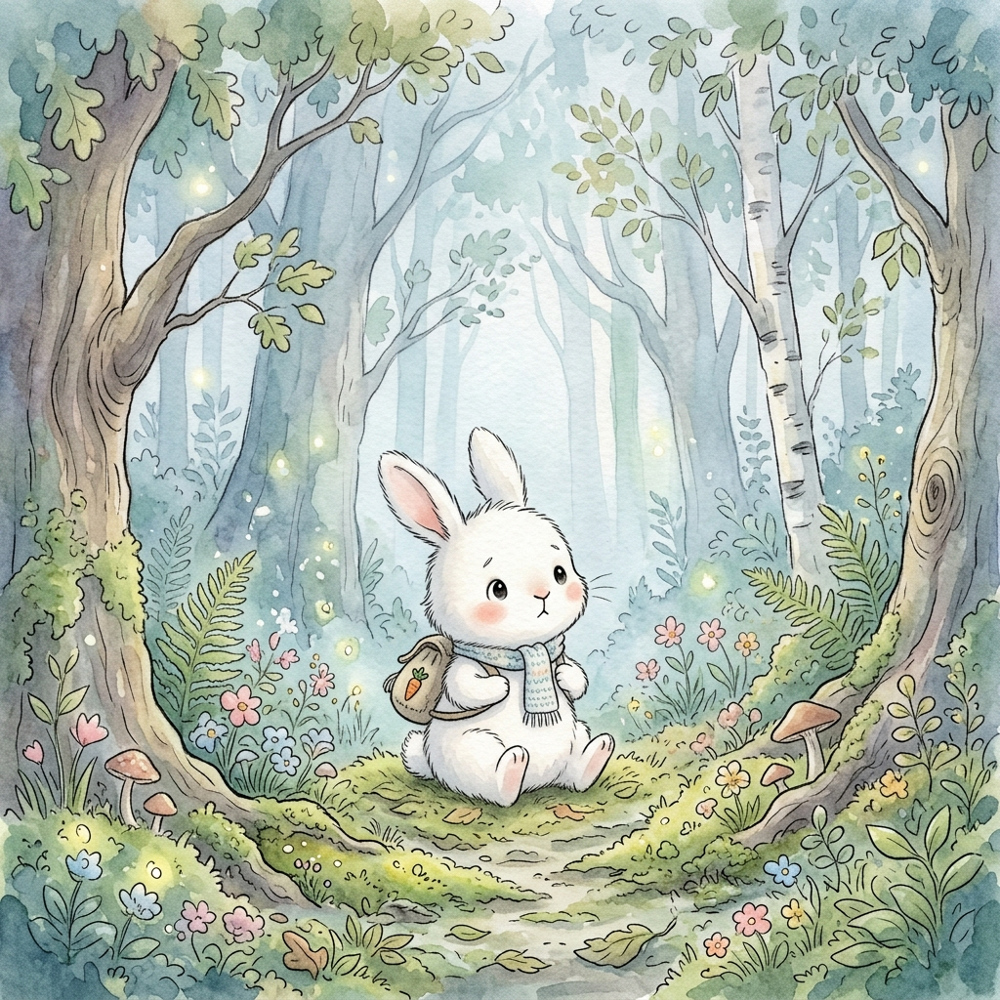
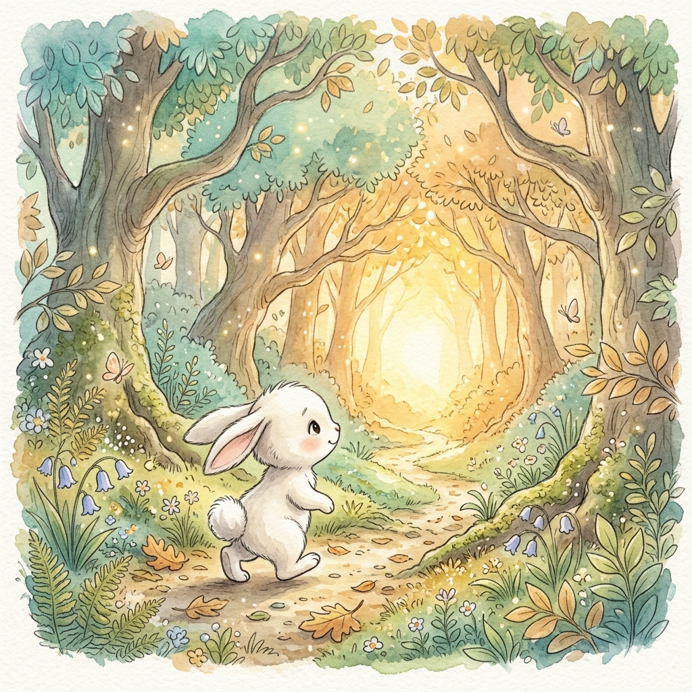
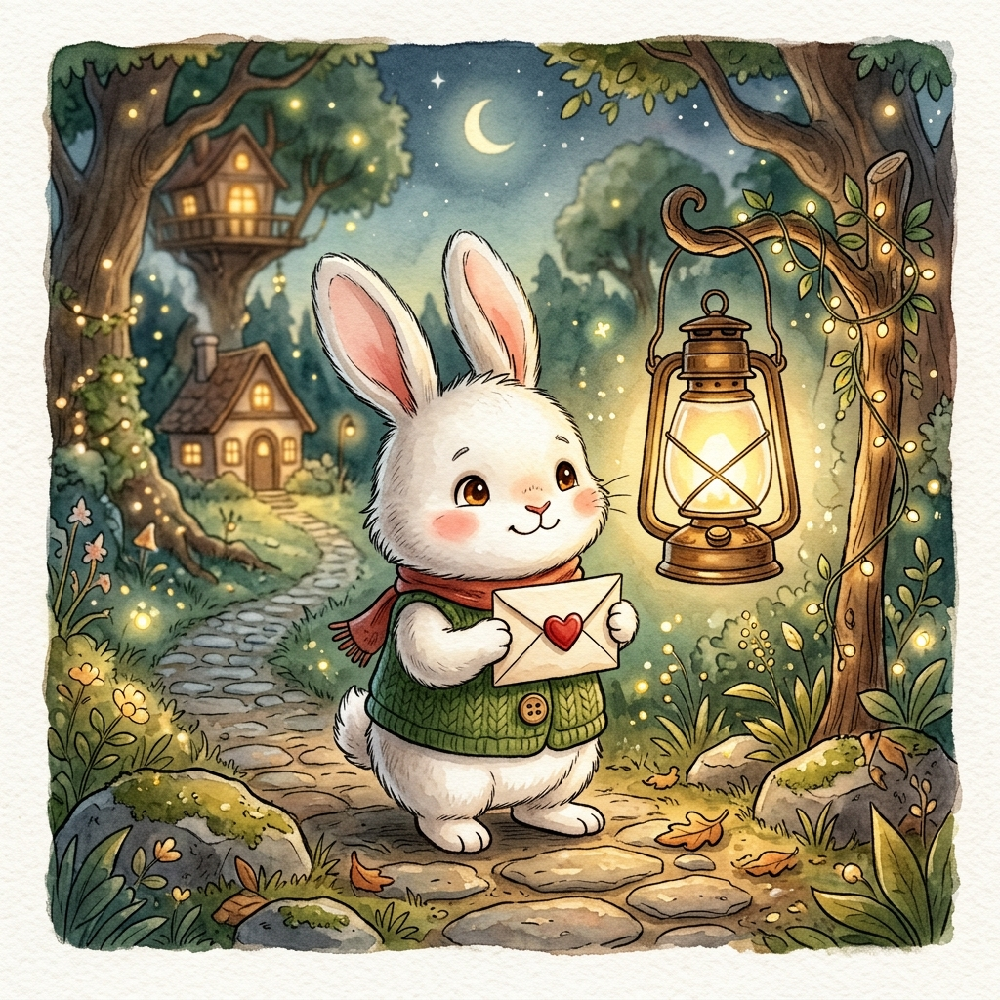
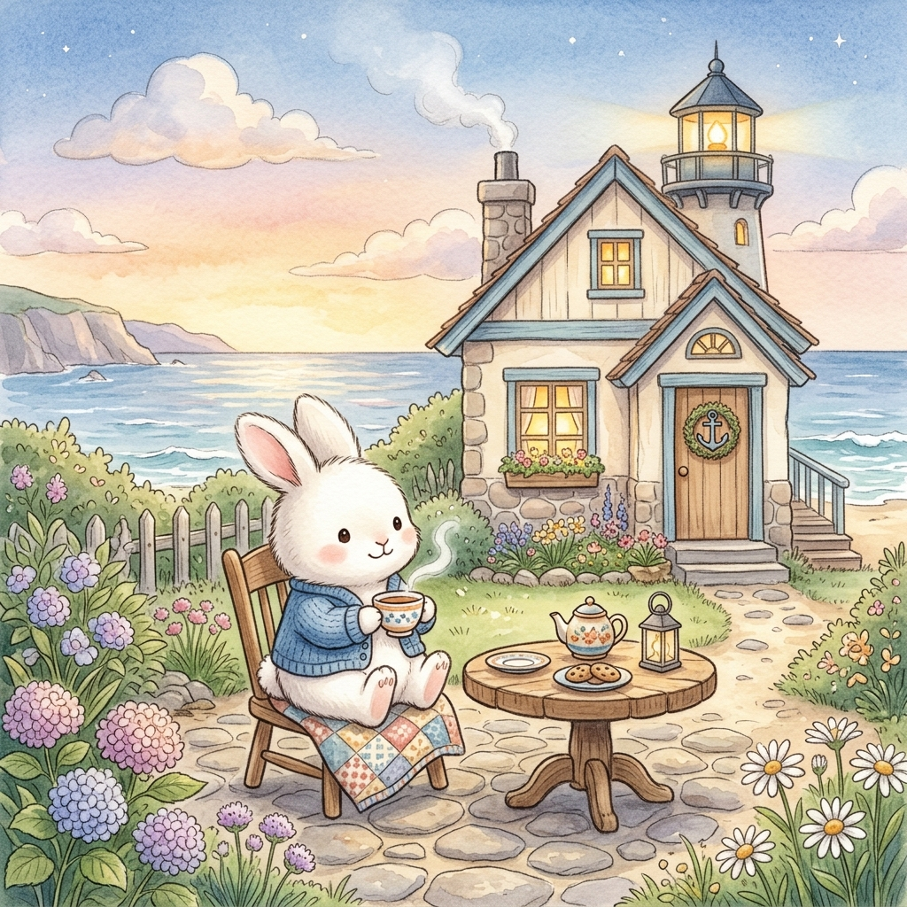
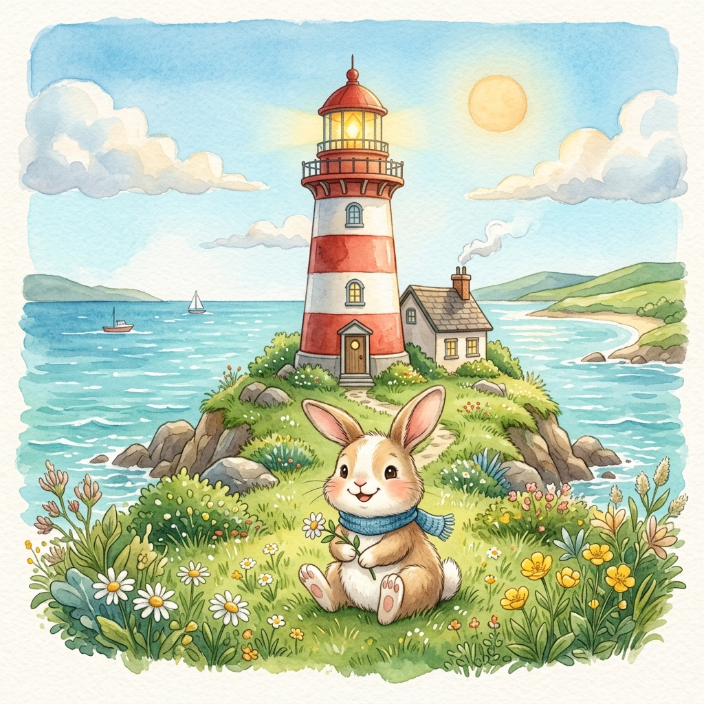

마음 동화책
안개 너머 등대를 찾아서

첫 번째 이야기
어느 날 문득, 마음에 짙은 안개가 찾아올 때가 있어요. 앞이 잘 보이지 않아 막막하고 두려운 건 당신이 길을 잃었기 때문이 아니라, 잠시 쉬어가라는 마음의 신호일지도 몰라요.
Page 1 / 5

두 번째 이야기
안개 속에서도 당신을 기다리는 작은 등불이 있답니다. 혼자서 길을 찾기 힘들 땐, 등대지기의 손을 빌려도 괜찮아요. 도움을 구하는 것은 당신이 포기했다는 뜻이 아니라, 다시 걷고 싶다는 가장 강력한 의지니까요.
Page 2 / 5

세 번째 이야기
등대지기에게 전화를 걸 때, 무슨 말을 해야 할지 몰라 망설여지나요? 그럴 땐 이 다정한 편지를 소리 내어 읽어보세요. 등대지기는 언제든 당신의 이야기를 들을 준비가 되어 있답니다.
"안녕하세요, 요즘 마음의 안개가 너무 짙어 길을 찾기가 어려워요. 조금만 쉬어갈 수 있게 도움을 주실 수 있을까요? 처음이라 조금 긴장이 되네요."
Page 3 / 5

네 번째 이야기
가까운 곳에 당신을 위한 안전한 쉼터들이 늘 준비되어 있어요. 언제든 전화를 걸면 따뜻한 차 한 잔과 같은 위로를 건네줄 분들이 기다리고 있답니다.
🕯️ 마음상담전화: 1577-0199
🕯️ 청소년의 창: 1388
🕯️ 동네 마음 쉼터 (보건소 상담센터)
🕯️ 청소년의 창: 1388
🕯️ 동네 마음 쉼터 (보건소 상담센터)
Page 4 / 5

마지막 이야기
축하해요! 당신은 벌써 안개를 뚫고 등대 앞에 도착했네요. 당신의 마음속 등불은 이제 그 어느 때보다 환하게 빛나고 있어요. 이제 가벼운 마음으로 첫 발걸음을 떼어 보세요.
Page 5 / 5